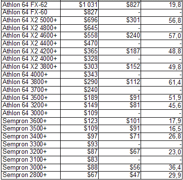

| K6-2 | Sempron | Turion 64 | Phenom X3 | Athlon II |
|---|---|---|---|---|
| K6-III | Athlon 64 | Athlon 64 X2 | Athlon 6-series | E2 series |
| Athlon | Mobile Athlon 64 | Turion 64 X2 | Athlon 4-series | A4 series |
| Duron | Athlon XP-M | Phenom FX | Athlon X2 | A6 series |
| Athlon XP | Athlon 64 FX | Phenom X4 | Phenom II | A8 series |
| - | - | - | - | A10 series |
AMD 2901 bit-slice processor family includes 2901 and 2903 4-bit microprocessors slices, 2909 and 2911 microprogram sequencers, 2910 microprogram controller and other support chips. The 2901 processor consists of 16 4-bit registers, 4-bit ALU and associated decoding/multiplexing circuits. The ALU accepts 9-bit microinstructions that specify source operands, ALU function and the destination register. The 2901 ALU can perform 8 different functions (they are encoded into 3 bits within the microinstruction): addition, subtraction and logic operations. Multiple 2901 bit-slice processors could be combined together to build microprocessors with any data width (in 4 bits increments). Enhanced version of 2901, AMD 2903 has 9 new special ALU functions used for implementation of multiplication, division and normalization operations. The number of arithmetic and logic ALU functions in 2903 was increased to 15.
Throughout the 1980s and into the 1990s, AMD also produced a line of 32-bit RISC processors known as the AM29000 series. These processors were essentially the next generation of its earlier AM2900 products, however, and they were targeted more at the embedded market than high-performance computers. AMD designed the AM29000 using a variation of the Berkeley RISC architecture. Eventually, AMD discontinued work on the AM29000 series to focus on its x86 processor line.
AMD's second x86 processor was the AM286, a licensed clone of Intel's 80286. Although the chip was architecturally identical, it had one advantage over its Intel counterpart: higher clock speeds. Where Intel capped the 80286 at 12.5 MHz, AMD pushed the AM286 as high as 20 MHz.
In 1996, AMD released its first x86 processor designed entirely in-house. The fifth-generation x86 K5 processor used an innovative design that combined the execution hardware from AMD's discontinued AM29000 RISC processors with an x86 front end. Because the execution back-end hardware was based on a RISC design, instructions were decoded into micro-instructions that could be fed into one of five integer execution units or an integrated FPU
In 1999, AMD released its seventh-generation processor, the Athlon. It used a new architecture that increased IPC considerably and allowed AMD to push the clock rates up to 1 GHz. The FPU inside of AMD's previous processors had lagged behind competing Intel products, so improving the FPU was one of the primary objectives of the design team. This lead to the Athlon being equipped with an exceedingly powerful triple-issue out-of-order FPU that surpassed Intel's competing processors.
In 2002, AMD rolled out the Athlon Thoroughbred, which was produced on a new 130nm process. This helped lower power consumption push frequencies over 2 GHz. As the process matured, AMD introduced the Barton a year later. Barton brought a modest clock rate increase, and it also doubled the size of the L2 cache and added support for 200 MHz FSB and 400 MHz DDR RAM.
In 2003, AMD shocked the world by introducing the first consumer-oriented 64-bit x86 processor. Codenamed "K8," these processors were essentially heavily modified variations of the K7. By moving to a 64-bit design, AMD was able to extend the memory support to a theoretical 1 TB.
AMD's next architecture, K10, was a rather ambitious design. It is closely related to the K8, but it had several enhancements to the core and associated cache and memory controller. IPC was improved compared to K8, but K10's greatest advantage was its quad-core design that enabled it to run laps around the K8 dual-core CPUs in heavily-threaded applications.
Unfortunately, the K10 ran into problems early on. The first K10 processors were based on the Barcelona configuration and sold as Opteron server processors. But a flaw in Barcelona (known as the TLB bug) could cause the CPU to lock up. AMD was able to release a software patch to keep the TLB bug at bay. However, it imposed a sizable performance hit. Owing to the power requirements to run multiple CPU cores simultaneously, the K10 Phenom processors also struggled to run at higher clock speeds. The fastest quad-core model was limited to 2.6 GHz, whereas dual-core K10 processors sold under the Athlon brand name manged to reach just 2.8 GHz.
AMD lost ground to Intel in essentially every area of the CPU market during the Bulldozer years. The company lost significant financial resources and had to sell its silicon fabs. With an uphill battle to remain in the processor market, AMD put its hopes on Ryzen.
The top end Ryzen processor, Ryzen 7 1800X, has eight CPU cores clocked at 3.6 GHz. The CPU can also accelerate up to 4.1 GHz in certain work loads. The eight cores are organized into two partitions. Each partition has 8MB of L3 cache, and each core has a dedicated 512KB L2 cache, a 64KB L1 instruction cache, and a 64KB L1 data cache. This gives the Ryzen 7 1800X a total of 16MB of L3, 4MB of L2, and 1MB of L1 cache.
